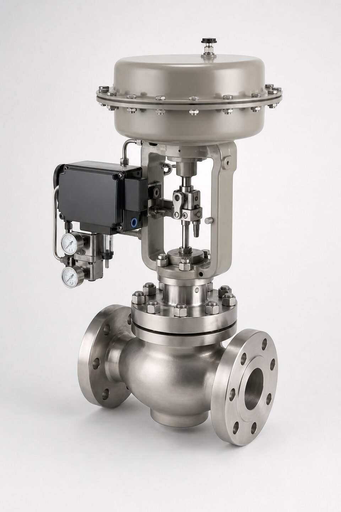

نقش شیر کنترل در حلقه فرایند
شیر کنترل آخرین و تنها عنصر متحرک حلقه کنترل است: سیگنال از کنترلکننده میآید، عملگر آن را به حرکت ساقه تبدیل میکند و شیر با تغییر سطح عبور، دبی را تنظیم مینماید. برخلاف شیرهای قطع و وصل که فقط دو حالت دارند، شیر کنترل باید در هزاران نقطه میانی، پایدار، دقیق و قابل تکرار عمل کند. به همین دلیل طراحی آن حول مفاهیمی مانند ضریب ظرفیت، مشخصه جریان و پایداری ساقه شکل گرفته و سری استاندارد (IEC 60534) همه این مفاهیم را تعریف میکند.

ساختار سری استاندارد
- بخش تعاریف و معادلات پایه: زبان مشترک اصطلاحات.
- بخش سایزینگ جریان مایع: محاسبه ضریب ظرفیت برای مایعات و پیشبینی کاویتاسیون.
- بخش سایزینگ جریان گاز: محاسبات برای گازها و پیشبینی نویز آیرودینامیکی.
- بخش تست: روشهای تست بدنه، نشیمنگاه و نشتی.
- بخش نویز: روشهای پیشبینی نویز آیرودینامیکی.
- بخش پروفیل جریان: تعریف مشخصههای خطی، درصد مساوی و سریع.
سایزینگ؛ قلب انتخاب شیر کنترل
سایزینگ یعنی محاسبه ضریب ظرفیت لازم بر اساس دبی، فشار بالادست و پاییندست، دما و خواص سیال، و سپس انتخاب سایزی که این ضریب را با حاشیه مناسب پوشش دهد. قاعده رایج این است که شیر در دبی بیشینه حدود هفتاد تا هشتاد درصد باز شود تا هم حاشیه کنترل باقی بماند و هم سایش کاهش یابد. اگر فشارهای ورودی و خروجی به درستی ذکر نشوند، سایزینگ غلط از خود سازنده سر در میآورد؛ بنابراین مسئولیت صحت دادههای فرایند با خریدار است و سازنده مسئول صحت محاسبه با دادههای دادهشده.
مشخصه جریان و پایداری
مشخصه جریان تعیین میکند با هر درصد باز شدن، ظرفیت چقدر تغییر میکند. در مشخصه خطی، تغییر ظرفیت با تغییر باز شدن متناسب است و برای فرایندهایی با افت فشار تقریباً ثابت مناسب است. در درصد مساوی، هر درصد باز شدن، درصد ثابتی به ظرفیت موجود اضافه میکند و برای فرایندهایی که افت فشار شیر بخش بزرگی از افت کل نیست انتخاب میشود. مشخصه سریعباز برای کاربردهای قطع و وصل استفاده میگردد. انتخاب اشتباه مشخصه، خود را به شکل نوسان حلقه یا پاسخ کُند نشان میدهد.
کاویتاسیون و نویز
وقتی افت فشار شیر از حد مشخصی فراتر رود، فشار موضعی به زیر فشار بخار سیال میرسد و حبابهای بخار تشکیل میشوند؛ ترکیدن این حبابها در پاییندست، کاویتاسیون است که نشیمنگاه و بدنه را مانند سندبلاست تخریب میکند. در گازها نیز افت فشار زیاد، سرعتهای مافوق صوت و نویز آیرودینامیکی ایجاد میکند. درمان این پدیدهها، تقسیم افت فشار بین چند مرحله، استفاده از تریم ضدکاویتاسیون یا تغییر محل شیر در خط است؛ هر سه راه باید در مرحله طراحی بررسی شوند نه پس از خرید.
مدارک و تستهای تحویل
مدارک یک شیر کنترل باید شامل برگه داده با شرایط فرایند، محاسبات سایزینگ، منحنی مشخصه، گزارش تست بدنه و نشیمنگاه با کلاس نشتی توافقشده، و گواهی مواد باشد. در سفارشهای با عملگر و پوزیشنر، مدارک کالیبراسیون نیز باید تحویل شود. هنگام مقایسه پیشنهادها، صرف قیمت بدنه ملاک نیست؛ مقایسه باید با سایز، کلاس، تریم و مدارک تست همشرایط انجام شود تا پیشنهادهای نامتجانس کنار هم قرار نگیرند.
نگهداری و خرابیهای رایج شیر کنترل
شیر کنترل، پرتحرکترین عنصر حلقه کنترل است و به همین دلیل بیشترین استهلاک را دارد. خرابیهای رایج را میتوان در چند گروه دستهبندی کرد: فرسایش نشیمن و دیسک که به نشتی در وضعیت بسته و کاهش دقت کنترل منجر میشود، خرابی پکینگ که با نشتی از اطراف ساقه خود را نشان میدهد، مشکلات عملگر شامل افت فشار هوای تغذیه و خرابی موقعیتیاب که به پاسخ کند یا نوسان حلقه منجر میشوند، و گرفتگی مسیرهای کوچک هوای موقعیتیاب در محیطهای پر گرد و غبار. برنامه نگهداری پیشگیرانه باید شامل بازرسی دورهای نشتی، تست پاسخ پلهای برای بررسی سرعت و دقت عملگر و کالیبراسیون موقعیتیاب باشد. در سرویسهای ساینده یا خورنده، بازرسی داخلی در توقفهای برنامهریزیشده و تعویض پیشگیرانه قطعات تریم بر اساس سوابق سایش، از توقفهای ناخواسته جلوگیری میکند.
جمعبندی
شیر کنترل تجهیز حساسی است که انتخاب آن به دادههای دقیق فرایند نیاز دارد: دبی، فشارها، دما و سیال. با دانستن ساختار سری استاندارد، اصول سایزینگ و خطرات کاویتاسیون و نویز، خریدار میتواند استعلامی شفاف بنویسد، پیشنهادها را همشرایط مقایسه کند و از خرید شیری که بعداً در خط مشکل ایجاد میکند جلوگیری نماید.
سوالات رایج
ضریب ظرفیت شیر چیست؟
عددی که ظرفیت عبور شیر را در شرایط مرجع بیان میکند و مبنای سایزینگ است. با دانستن دبی، فشار و مشخصات سیال، سایز لازم از روی آن محاسبه میشود.
چرا سایز بزرگتر لزوماً بهتر نیست؟
شیر بیش از حد بزرگ در بخشهای کوچک باز شدن کار میکند، کنترل ناپایدار میشود، سایش نشیمنگاه زیاد شده و هزینه بیدلیل بالا میرود.
مشخصه جریان چیست؟
رابطه بین درصد باز شدن شیر و ضریب ظرفیت؛ مانند خطی، درصد مساوی یا سریع. انتخاب آن به رفتار حلقه کنترل بستگی دارد.
کاویتاسیون و نویز چرا مهماند؟
افت فشار زیاد میتواند باعث تشکیل و ترکیدن حبابهای بخار شود که نشیمنگاه را تخریب میکند و نویز ایجاد میکند. این پدیدهها باید در طراحی پیشبینی شوند.
مطالب مرتبط
- راهنمای شیرهای کنترل
- مقایسه کلاس نشتی (Class I تا VI)
- راهنمای انتخاب عملگر شیرآلات
- راهنمای جامع شیر سوزنی (گلوب)
با ذکر شرایط فرایند (دبی، فشار، دما و سیال)، شیر کنترل سایز شده همراه عملگر و مدارک تست عرضه میشود.
مشاهده صفحه محصول ← ثبت RFQ همین محصولتامین این تجهیزات را به پیشرو تجهیز فرتاک بسپارید
شرکت پیشرو تجهیز فرتاک تامینکننده تخصصی تجهیزات صنعتی برای پروژههای نفت، گاز، پتروشیمی، فولاد و نیروگاهی است. برای دریافت پیشنهاد فنی و قیمت، استعلام (RFQ) خود را ثبت کنید تا کارشناسان مهندسی فروش در کوتاهترین زمان پاسخ دهند.
- تامین شیرآلات صنعتیخانواده کامل شیر با گواهی مواد و تست
- تامین تجهیزات صنایع نفت و گازپکیج مواد مطابق وندورلیست